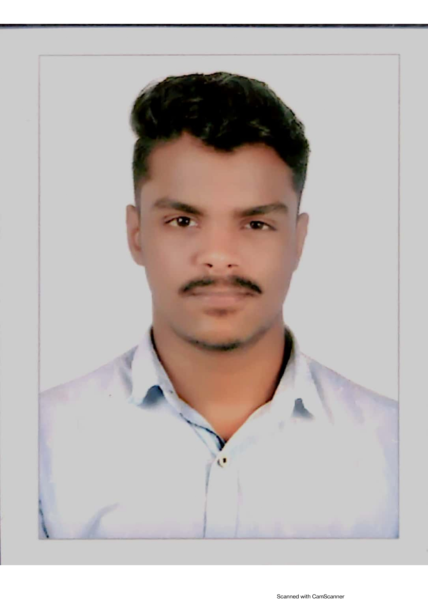

Arignar Kalaingar Febin AYYADHORAI

Summary
Widely known for his greater acceptance in TamilNadu and accross Kerala. He is from The Puthiyaparambath Family being the heir of Mr. Ali Mohamed Kundukuli ( Chairman , World Sports Riyadh )
Education
- Bachelor of Computer Application (2022-2025)
- Class 12 (2019-2021)
- Class 10 (2018-2019)
Work Experience
Awards and certifications
Skills
For further details contact:
Contact me